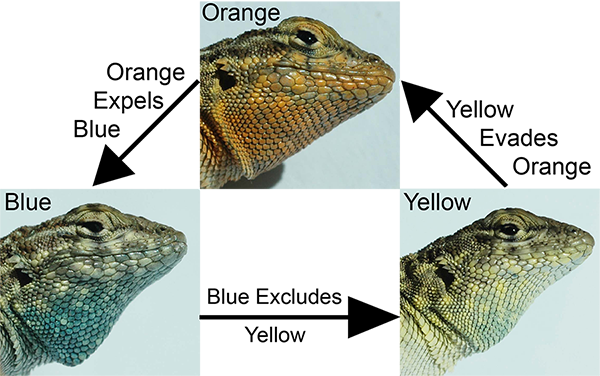

2026
Corl, A., Guzman, A., Bi, K., Vazquez, J.M., Smith, L.L., Blaimont, P., Spranger, R., Cooper, R.D., Miles, D., Goldberg, A., Gao, J., Xiang, X., Zhou, Y., Li, Q., Zhang, G., Sudmant, P.H., Bowie, R.C.K., McGuire, J.A., Sinervo, B., Nielsen, R. Science. 391: 69 - 74.

2025

Scarpetta, S.G., Karin, B.R., Corl, A., McGuire, J.A.. The evolutionary history of dragon lizards (Squamata: Agamidae) revealed by phylogenomics. 2025. Systematic Biology, syaf088. [link]
Domer, A., Misraje, T.R., Xing, D., Arango, B.G., Selleghin-Veiga, G., Corl, A., Bowie, R.C.K., McGuire, J.A., Sweazea, K.L.,Vázquez-Medina, J.P., Dudley, R. 2025. Myo-inositol is a key regulator of avian metabolism: From mechanisms to seasonal behavior. Science Advances. 11: 1-9. [link]
Wang-Claypool, C. Y., Corl, A., Jones, J., McGuire, J. A., Bowie, R. C. K., and Dudley, R. 2025. The proof is in the plumage: a method for detecting dietary ethanol exposure in birds by testing for ethyl glucuronide in feathers. Ecological and Evolutionary Physiology. 98: 1-13. [link]
Scarpetta, S. G., Fisher, R. N., Karin, B. R., Niukula, J. B., Corl, A., Jackman, T. R., McGuire, J. A.. 2025. Iguanas rafted more than 8,000 km from North America to Fiji. PNAS. 122: 1-10. [link]
2025
Callahan et al. 2025. Environmental DNA.

2024
Vaughn and Nielsen 2024. Molecular Biology and Evolution.

Irving-Pease, Refoyo-Martínez, Barrie, Ingason, Pearson, and Fischer et al. 2024. Nature.

Allentoft, Sikora, and Fischer et al. 2024. Nature.

Allentoft, Sikora, Refoyo-Martínez, Irving-Pease, Fischer, Barrie, and Ingason et al. 2024. Nature.

2023
Nielsen and Vaughn et al. 2023. PLOS Genetics.

2022
Hui and Nielsen 2022. BMC Bioinformatics.

Steigerwald et al. 2022. BioScience.

Jin and Aguilar-Gómez et al. 2022. Genome Biology and Evolution.

Brandt et al. 2022. Genetics.

Hui and Nielsen 2022. Bioinformatics.

2021
Pipes and Nielsen 2021. Bioinformatics.

Cheng et al. 2021. Molecular Biology and Evolution.

Ai et al. 2021. GigaScience.

Deng, Song, and Nielsen. 2021. Theoretical Population Biology.

Zhang et al. 2021. PNAS.

Bloom et al. 2021. Science.

Svedberg et al. 2021. Molecular Biology and Evolution.

Rocha et al. 2021. Trends in Ecology and Evolution.

Pipes et al. 2021. Molecular Biology and Evolution.

Meyer et al. 2021. California Agriculture.

Stern et al. 2021. AJHG.

Wang, Pipes, and Nielsen. 2021. Virus Evolution.

Stuckert et al. 2021. Molecular Ecology.

2020
Laisk et al. 2020. Nature Communications.

Márquez et al. 2020. Molecular Ecology.

Shchur et al. 2020. G3: Genes, Genomes, Genetics.

Margaryan et al. 2020. Nature.

Pei et al. 2020. PLoS Computational Biology.

Todesco et al. 2020. Nature.

Setter et al. 2020. PLoS Genetics.

Corbett-Detig et al. 2020. Molecular Biology and Evolution.

Wang et al. 2020. Molecular Biology and Evolution.

Ling et al. 2020. Molecular Biology and Evolution.

Maier et al. 2020. Nature Medicine.

Moreno-Mayar et al. 2020. Bioinformatics.

Barrett et al. 2020. Philosophical Transactions of the Royal Society B.

Da Fonseca et al. 2020. GigaScience.